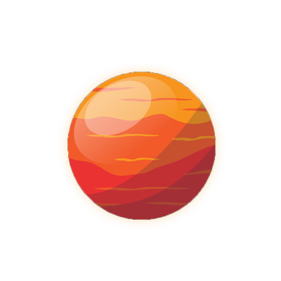
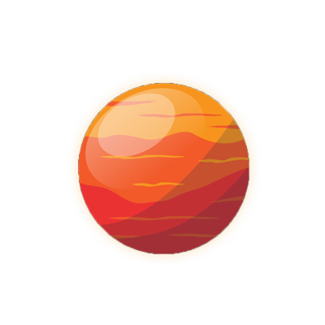

MARS
ดาวอังคาร (Mars) ดาวอังคารมีโครงสร้างภายในประกอบด้วยแก่นของแข็งมีรัศมีประมาณ 1,700 กิโลเมตร ห่อหุ้มด้วยชั้นแมนเทิลที่เป็นหินหนืดหนาประมาณ 1,600 กิโลเมตร และมีเปลือกแข็งเช่นเดียวกับโลก ดาวอังคารมีสีแดงเนื่องจากพื้นผิวประกอบด้วยออกไซด์ของเหล็ก (สนิมเหล็ก) พื้นผิวของดาวอังคาร เต็มไปด้วยหุบเหวต่างๆ มากมาย หุบเหวขนาดใหญ่ชื่อ หุบเหวมาริเนอริส (Valles Marineris) นอกจากนี้ดาวอังคารยังมีภูเขาไฟที่สูงที่สุดในระบบสุริยะชื่อ ภูเขาไฟโอลิมปัส (Mount Olympus)